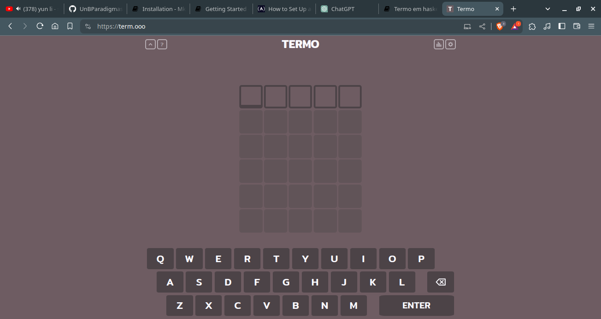
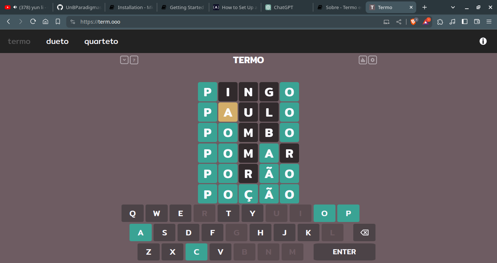

Sobre
Termo é um jogo que visa tentar advinhar as palavras com um numero x de tentativas dando dicas sobre quando é acertada uma letra ou quando erra.
Nosso projeto visa recriar isso dentro de uma linguagem funcional como haskell por exemplo.
Tela inicial do original

Em funcionamento
